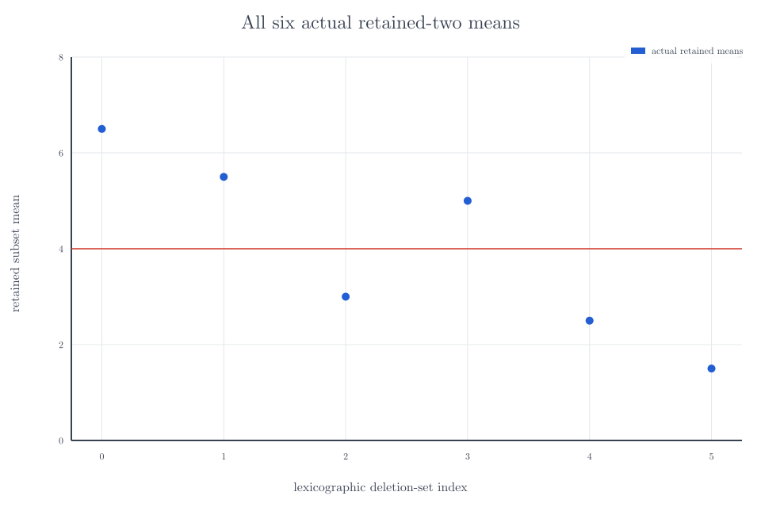
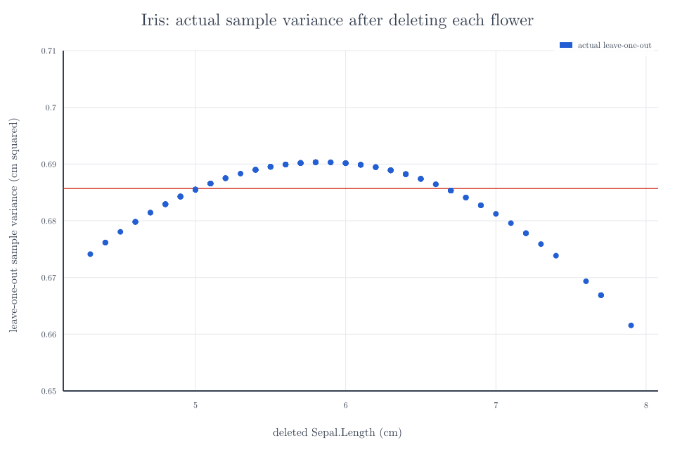
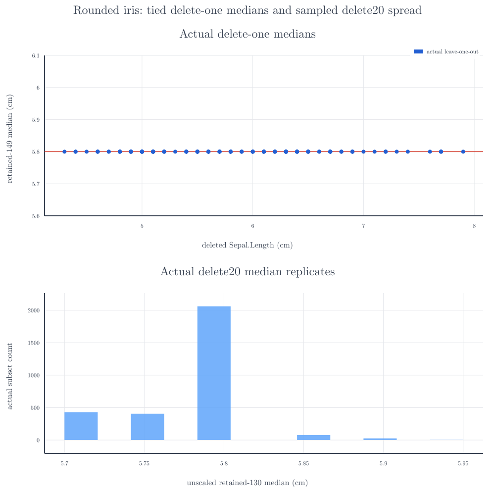
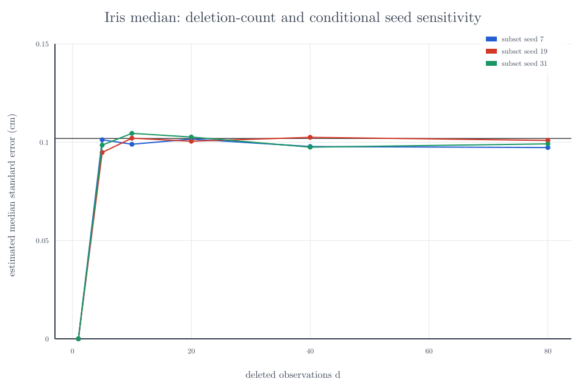

Jackknife: Actual Deletions, Bias Identities and Median Limits
Abstract
Estimate the bias and sampling uncertainty of a statistic by seeing how it changes when observations are systematically omitted. The jackknife turns actual deletion statistics into pseudo-values and a scaled variance estimate. We first check the algebra on three observations and enumerate a tiny delete-two example, then preserve the original iris variance, mean and median experiments. Exact identities for smooth statistics are separated from rounded-median pathologies, conditional Monte Carlo error and assumptions needed for inference. Neither a larger deletion count nor agreement with one bootstrap run certifies an uncertainty estimate.
Three observations and an actual deletion
For [1,2,4], the mean is seven thirds. Deleting the final observation leaves [1,2] and mean 1.5. Its pseudo-value is three times seven thirds minus twice 1.5, or four: the original observation. The next program evaluates the statistic once on the full sample and once per deletion. The diagram reads those actual results; pseudo-values are algebraic transforms, not independent new data.
#include <dm/dm.hpp>
int main() {
std::filesystem::create_directories("build");
const std::vector<double> x{1, 2, 4};
const auto f =
dm::stats::jackknife_statistic(dm::stats::JackknifeStatistic::Mean);
const auto r = dm::stats::jackknife_checked(x, f);
std::print("| deleted index | original value | actual leave-one-out mean | pseudo-value |\n| ---: | " "---: | ---: | ---: |\n");
for (std::size_t i = 0; i < x.size(); ++i)
std::print("| {} | {:.0f} | {:.8f} | {:.8f} |\n", i, x[i],
r.leave_one_out[i], r.pseudo_values[i]);
std::print("Full mean {:.8f}, bias {:.8e}, corrected {:.8f}, SE {:.8f}.\n",
r.estimate, r.bias, r.bias_corrected, r.standard_error);
dm::stats::jackknife_deletion_diagram(x, r, 2).save_svg(
"build/jackknife_tiny.svg");
}| deleted index | original value | actual leave-one-out mean | pseudo-value |
|---|---|---|---|
| 0 | 1 | 3.00000000 | 1.00000000 |
| 1 | 2 | 2.50000000 | 2.00000000 |
| 2 | 4 | 1.50000000 | 4.00000000 |
Full mean 2.33333333, bias -2.96041403e-16, corrected 2.33333333, SE 0.88191710.
Derive the delete-one summary
Let theta be the full-sample statistic and theta_(i) the statistic with index i removed, in original retained-value order. Write their average as theta_bar. The bias estimate, corrected statistic and pseudo-values are
The average pseudo-value equals the corrected statistic by algebra. For a regular estimator with an expectation expansion theta+c/n plus a sufficiently regular remainder, the n versus n−1 comparison estimates the leading c/n bias. That argument is an assumption about the estimator and sampling model, not a universal guarantee that every corrected statistic is unbiased.
The delete-one variance estimate has equivalent replicate and pseudo-value forms:
For the mean, theta_(i)=(n*mean−x_i)/(n−1), the deletion average is the full mean, and p_i=x_i. Hence bias is zero and SE squared is s squared divided by n. These are exact-arithmetic identities; tiny floating residuals in computed bias are not scientific bias. Pseudo-values for general statistics are dependent transforms; the variance formula is not proof of independent observations or a confidence interval.
Delete more, and enumerate a case small enough to inspect
A delete-d subset retains m=n−d observations. Averaging over all C(n,d) distinct deletion sets gives the conditional subset-statistic variance v_sub. The implemented delete-d estimate is
For the mean of a uniformly selected retained subset, finite-population sampling gives v_sub=d*s squared/(m*n). Multiplying by m/d gives s squared/n for every valid deletion count. One derivation uses inclusion indicators: each has mean m/n and distinct indicators have covariance −m*(n−m)/(n squared*(n−1)); substituting these into the variance of the retained mean yields the expression above.
The next program enumerates all six delete-two sets on [1,2,4,9]. Each table row is paired with its actual callback, and the complete delete-two mean SE agrees with the delete-one identity. Enumeration is over indices, so equal observed values would still represent different deletion sets.
#include <dm/dm.hpp>
int main() {
std::filesystem::create_directories("build");
const std::vector<double> x{1, 2, 4, 9};
const auto f =
dm::stats::jackknife_statistic(dm::stats::JackknifeStatistic::Mean);
const auto t = dm::stats::jackknife_delete_d_trace(x, f, {2, 6, 7});
std::print("| actual subset | first deleted index | second deleted index | retained mean |\n| ---: | " "---: | ---: | ---: |\n");
std::vector<double> index;
for (std::size_t i = 0; i < t.replicates.size(); ++i) {
index.push_back(double(i));
std::print("| {} | {} | {} | {:.8f} |\n", i, t.deletion_sets[i][0],
t.deletion_sets[i][1], t.replicates[i]);
}
std::print("Complete {}, subsets {}, callbacks {}, subset-statistic variance {:.8f}, delete-two SE " "{:.8f}, delete-one SE {:.8f}.\n",
t.result.complete, t.result.num_subsets, t.evaluations,
t.replicate_population_variance, t.result.standard_error,
dm::stats::jackknife(x, f).standard_error);
auto p = dm::graphics::RPlot::create();
p.points(index, t.replicates, "actual retained means", {35, 95, 210}, 5).abline(t.result.estimate, 0, {210, 55, 40}, 1.5).title("All six actual retained-two means").x_label("lexicographic deletion-set index").y_label("retained subset mean").ylim(0, 8).save_svg("build/jackknife_exact.svg");
}| actual subset | first deleted index | second deleted index | retained mean |
|---|---|---|---|
| 0 | 0 | 1 | 6.50000000 |
| 1 | 0 | 2 | 5.50000000 |
| 2 | 0 | 3 | 3.00000000 |
| 3 | 1 | 2 | 5.00000000 |
| 4 | 1 | 3 | 2.50000000 |
| 5 | 2 | 3 | 1.50000000 |
Complete true, subsets 6, callbacks 7, subset-statistic variance 3.16666667, delete-two SE 1.77951304, delete-one SE 1.77951304.

Preserve the iris variance correction and mean identity
The canonical iris DataFrame supplies all 150 Sepal.Length values in cm, including ties and original row order. The observations are pooled across the three species, so this is a resampling diagnostic on the fixed empirical sample, not a demonstrated sampling design for a flower population.
Let Q be the sum of squared deviations around the full mean. The plug-in variance is Q/n; deleting observation i leaves
Summing the deletion expression gives mean deleted plug-in variance Q*(n−2)/((n−1)*(n−1)). Substitution into the bias formula yields corrected Q/(n−1). For the displayed influence figure we retain the original choice of sample variance: the leave-one-out values divide Q_(-i) by n−2. This is a downward-opening quadratic in the deleted value. Removing an extreme value lowers the remaining variance; deleting a central value raises it slightly. The original report's description of a U-shape had the curvature reversed.
#include <dm/dm.hpp>
int main() {
std::filesystem::create_directories("build");
const auto iris = dm::datasets::iris();
const auto &x = iris.get_column("Sepal.Length").values();
const auto mean =
dm::stats::jackknife_statistic(dm::stats::JackknifeStatistic::Mean);
const auto population =
dm::stats::jackknife_statistic(dm::stats::JackknifeStatistic::PopulationVariance);
const auto sample =
dm::stats::jackknife_statistic(dm::stats::JackknifeStatistic::SampleVariance);
const auto jv = dm::stats::jackknife_checked(x, population);
const auto jm = dm::stats::jackknife_checked(x, mean);
const auto jvar = dm::stats::jackknife_checked(x, sample);
std::print("| statistic | full estimate | estimated bias | corrected estimate | jackknife SE | " "algebraic target |\n| --- | ---: | ---: | ---: | ---: | ---: |\n");
std::print("| plug-in variance | {:.12f} | {:.8e} | {:.12f} | {:.10f} | {:.12f} |\n",
jv.estimate, jv.bias, jv.bias_corrected, jv.standard_error,
sample(x));
std::print("| mean | {:.12f} | {:.8e} | {:.12f} | {:.10f} | {:.10f} |\n",
jm.estimate, jm.bias, jm.bias_corrected, jm.standard_error,
std::sqrt(sample(x) / x.size()));
std::print("Rows {}, all original-order leave-one-out sample variances {}.\n",
iris.nrows(), jvar.leave_one_out.size());
dm::stats::jackknife_influence_plot(x, jvar).title("Iris: actual sample variance after deleting each flower").x_label("deleted Sepal.Length (cm)").y_label("leave-one-out sample variance (cm squared)").ylim(.65, .71).save_svg("build/jackknife_iris.svg");
}| statistic | full estimate | estimated bias | corrected estimate | jackknife SE | algebraic target |
|---|---|---|---|---|---|
| plug-in variance | 0.681122222222 | -4.57129008e-03 | 0.685693512304 | 0.0670907197 | 0.685693512304 |
| mean | 5.843333333333 | 3.35257682e-14 | 5.843333333333 | 0.0676113162 | 0.0676113162 |
Rows 150, all original-order leave-one-out sample variances 150.

Why the rounded median has zero delete-one spread
For an even sample of 2k observations, deleting one observation makes the retained sample odd. Its median is either order statistic k or k+1 of the original sample. The delete-one estimate therefore depends on a single central gap g, with SE=sqrt(n−1)*g/2. If the two central order statistics tie, every leave-one-out median is identical and the computed SE is zero.
Here both central iris values are 5.8. That explains the exact zero deletion spread mechanically; it does not establish that a population median is known without uncertainty. Nor does it mean that every population quantile functional lacks differentiability: the difficulty is the local behaviour of the sample order statistic under one deletion. Suitable delete-d inference needs estimator regularity and appropriate growth of d with sample size. A fixed d=20 run on a rounded, pooled sample cannot prove those asymptotic assumptions.
We preserve d=20, subset budget3000, seed7 and the bootstrap budget4000, seed1 and confidence setting0.95. The trace stores the actual sorted deletion sets and median callbacks from the producing run. The histogram shows raw retained-130 medians; their raw variance must be multiplied by 130/20 to obtain the reported delete-d variance. The bootstrap SE is a different conditional empirical resampling estimate, not a truth benchmark or proof that this rescaling is valid.
#include <dm/dm.hpp>
int main() {
std::filesystem::create_directories("build");
const auto iris = dm::datasets::iris();
const auto &x = iris.get_column("Sepal.Length").values();
const auto median =
dm::stats::jackknife_statistic(dm::stats::JackknifeStatistic::Median);
const auto one = dm::stats::jackknife_checked(x, median);
const auto many =
dm::stats::jackknife_delete_d_trace(x, median, {20, 3000, 7});
const auto boot = dm::stats::Bootstrap({4000, .95, 1}).run(x, median);
auto sorted = x;
std::sort(sorted.begin(), sorted.end());
std::print("Central original values {:.1f}, {:.1f}; full median {:.1f}.\n",
sorted.at(74), sorted.at(75), one.estimate);
std::print("| conditional method | SE | evaluated deletion sets or bootstrap resamples | complete " "deletions |\n| --- | ---: | ---: | --- |\n");
std::print("| delete-one median | {:.12f} | {} | true |\n",
one.standard_error, one.leave_one_out.size());
std::print("| delete20 median | {:.12f} | {} | {} |\n",
many.result.standard_error, many.result.num_subsets,
many.result.complete);
std::print("| bootstrap median | {:.12f} | {} | false |\n",
boot.standard_error, boot.replicates.size());
std::print("Actual delete20 callbacks {}, raw subset population variance {:.12f}; rescaling factor " "{:.1f}.\n",
many.evaluations, many.replicate_population_variance, 130. / 20);
auto left =
dm::stats::jackknife_influence_plot(x, one).title(
"Actual delete-one medians").x_label("deleted Sepal.Length (cm)").y_label("retained-149 median (cm)").ylim(5.6, 6.1);
auto right =
dm::graphics::RPlot::hist(many.replicates, 12).title(
"Actual delete20 median replicates").x_label("unscaled retained-130 median (cm)").y_label("actual subset count");
auto layout = dm::graphics::RLayout::create(2, 1);
layout.add(left).add(right).size(1000, 1000).title("Rounded iris: tied delete-one medians and sampled delete20 spread").fit_panels().save_svg("build/jackknife_median.svg");
}Central original values 5.8, 5.8; full median 5.8.
| conditional method | SE | evaluated deletion sets or bootstrap resamples | complete deletions |
|---|---|---|---|
| delete-one median | 0.000000000000 | 150 | true |
| delete20 median | 0.101577906609 | 3000 | false |
| bootstrap median | 0.101891927385 | 4000 | false |
Actual delete20 callbacks 3001, raw subset population variance 0.001587395556; rescaling factor 6.5.

Monte Carlo error and deletion-count sensitivity are different questions
When C(n,d) exceeds the budget B, the implementation samples B uniform size-d sets with replacement across draws; an individual set never repeats an index. With conditional subset variance v_sub and B independent ideal draws, the population dispersion around the sampled mean has expectation (B−1)/B times v_sub. The legacy denominator B is retained, so B=1 gives zero dispersion even when the full deletion population varies. Its square root has additional nonlinear Monte Carlo behaviour. Increasing B addresses this conditional approximation, not the statistical validity of a chosen d.
The next sweep keeps the observed iris sample fixed and repeats six d values with three seeds. Variation across seeds is conditional simulation variation, not a confidence interval. Variation across d reflects different resampling laws and scaling. d=1 enumerates all150 sets, so its seed is ignored; larger d values use3000 sampled sets. The bootstrap reference uses the original 4000-resample seed1 run again as a separate matched-input experiment.
The current original-settings delete20 SE is about0.10158 and bootstrap SE about0.10189. The old cached0.1001 and0.1013 are not reproduced on the current toolchain. Running the frozen original delete-d implementation and its original median callback on this same iris sample and seed gives0.10157790660921848, agreeing with the current result. The stored four-decimal output is historical; comparisons here use fresh measured results without inferring the cause of that historical difference.
#include <dm/dm.hpp>
int main() {
std::filesystem::create_directories("build");
const auto iris = dm::datasets::iris();
const auto &x = iris.get_column("Sepal.Length").values();
const auto median =
dm::stats::jackknife_statistic(dm::stats::JackknifeStatistic::Median);
const auto boot = dm::stats::Bootstrap({4000, .95, 1}).run(x, median);
auto p = dm::graphics::RPlot::create();
const std::vector<dm::graphics::RGB> colors{{35, 95, 210}, {210, 55, 40},
{25, 150, 100}};
std::vector<std::string> labels;
std::size_t color = 0;
std::print("| deleted d | seed | actual subsets | complete | median SE |\n| ---: | ---: | ---: | --- | " "---: |\n");
for (std::uint64_t seed : {7, 19, 31}) {
std::vector<double> ds, se;
for (std::size_t d : {1, 5, 10, 20, 40, 80}) {
const auto r =
dm::stats::jackknife_delete_d(x, median, {d, 3000, seed});
ds.push_back(double(d));
se.push_back(r.standard_error);
std::print("| {} | {} | {} | {} | {:.12f} |\n", d, seed,
r.num_subsets, r.complete, r.standard_error);
}
const auto label = std::format("subset seed {}", seed);
labels.push_back(label);
p.line(ds, se, label, colors[color], 2).points(ds, se, label,
colors[color], 4);
++color;
}
p.abline(boot.standard_error, 0, {70, 70, 70}, 1.5).legend(labels, colors).title("Iris median: deletion-count and conditional seed sensitivity").x_label("deleted observations d").y_label("estimated median standard error (cm)").ylim(0, .15).save_svg("build/jackknife_sensitivity.svg");
int calls = 0;
bool budget = false, cap = false;
const auto counted = [&](const auto &v) {
++calls;
return median(v);
};
try {
(void) dm::stats::jackknife_delete_d(x, counted, {20, 0, 7});
} catch (const std::invalid_argument &) {
budget = true;
}
try {
(void) dm::stats::jackknife_delete_d_trace(x, counted, {20, 3000, 7},
{150, 62999});
} catch (const std::length_error &) {
cap = true;
}
std::print("Zero subset budget rejected: {}. Complete63000-entry history rejected by62999 cap: {}. " "Callbacks before these admission failures: {}.\n",
budget, cap, calls);
if (!budget || !cap || calls != 0)
throw std::runtime_error("admission control mismatch");
}| deleted d | seed | actual subsets | complete | median SE |
|---|---|---|---|---|
| 1 | 7 | 150 | true | 0.000000000000 |
| 5 | 7 | 3000 | false | 0.101209902897 |
| 10 | 7 | 3000 | false | 0.098943945972 |
| 20 | 7 | 3000 | false | 0.101577906609 |
| 40 | 7 | 3000 | false | 0.097787388417 |
| 80 | 7 | 3000 | false | 0.097264421953 |
| 1 | 19 | 150 | true | 0.000000000000 |
| 5 | 19 | 3000 | false | 0.094778900606 |
| 10 | 19 | 3000 | false | 0.102030681660 |
| 20 | 19 | 3000 | false | 0.100485396258 |
| 40 | 19 | 3000 | false | 0.102472401772 |
| 80 | 19 | 3000 | false | 0.100894067797 |
| 1 | 31 | 150 | true | 0.000000000000 |
| 5 | 31 | 3000 | false | 0.098513033543 |
| 10 | 31 | 3000 | false | 0.104495659134 |
| 20 | 31 | 3000 | false | 0.102617820496 |
| 40 | 31 | 3000 | false | 0.097472333682 |
| 80 | 31 | 3000 | false | 0.099147644009 |
Zero subset budget rejected: true. Complete63000-entry history rejected by62999 cap: true. Callbacks before these admission failures: 0.

Implementation, ownership and statistical scope
Delete-one requires n+1 statistic calls and O(n squared) value copying, plus callback costs. It owns n actual leave-one-out values and n pseudo-values, with O(n) working/output storage. The checked variant admits the complete n inputs and2n returned doubles before callbacks/copies. The legacy call disables only optional ceilings; finite-value and shape checks still apply.
Delete-d computes the binomial count by an exact capped integer recurrence. It enumerates lexicographic deletion indices if the count fits the positive budget, otherwise samples exactly the budgeted number of sets using a local MT19937-64 engine and the retained partial Fisher-Yates permutation policy. Kept observations retain original order. The ordinary function streams centred mean/variance without retaining subset histories: O(n+d) workspace and O(B*(n+d log d)) copying/selection plus B+1 callback costs. The trace retains B*(d+1) actual deletion-index/replicate entries, admitted completely before callbacks/copies. There is no RNG replay or repeated-prefix fit.
Default optional limits are one million input elements and one million retained scalar entries; zero disables a cap. These exclude borrowed sample, scalar summaries, kept/permutation work vectors, capacities and byte/peak RAM. Indices and doubles both count as scalar entries, not equal-size physical memory units. Graphics have a separate complete point quota and validate displayed counts and finite values, not edited-history provenance. All returned vectors are owned; no input/callback references or shared mutable state are retained. Callback exceptions propagate and already-executed side effects persist.
Both methods validate finite n>=2 samples and nonempty callbacks; delete-d requires1<=d<n and a positive subset budget. Every callback result must be finite. Wide centred summaries, robust norms and checked finite-double outputs avoid avoidable uncentred overflow, including constant maximal-double callbacks; unrepresentable summaries/pseudo-values throw. Wider arithmetic is platform dependent and does not recover information already lost by a callback. Native statistic bridges delegate mean, median and sample SD to existing vector APIs. The original result/options field layouts are retained; stable arithmetic can change final digits. Invalid zero budgets now throw instead of dividing by zero and masking the resulting NaN as a zero standard error.
The Shao and Wu general-theory reference is Annals of Statistics17(3),1176–1197(1989). Its JSTOR publication record confirms the bibliographic entry. The identities and finite conditional calculations above are derived explicitly; this report does not assert an asymptotic consistency theorem for this rounded iris sample. Smoothness, sampling design, dependence, ties and deletion-size choices matter. The mean and variance identities pass; the median examples expose limits and sensitivity rather than establish a universal delete-d repair.
Verification
Twenty selected native cases pass normally and with AddressSanitizer and UndefinedBehaviorSanitizer, including all deletion counts on1089 ternary samples, 4923 complete delete-d mean fits, actual callback order/sets, mean and plug-in variance identities, enumeration boundaries, huge binomial admission, seeded sampling, range/constant controls, caps, ownership and native graphics. Existing bootstrap, U/V-statistic and permutation cases pass within this selected suite. Independent rational checks cover2438 runs,62058 actual delete-d sets,5266 actual leave-one-out values and5266 pseudo-values. They recompute subset statistics, mode/count decisions, bias correction and variance scaling from the actual records. The4000 actual bootstrap replicate values independently reproduce its reported standard deviation; this does not claim a separate bootstrap RNG audit.
R verifies all150 Sepal.Length inputs against its canonical iris dataset, all600 leave-one-out statistic values and all3000 actual retained-130 medians for the original settings, as well as their summary statistics. A frozen-code comparison preserves every one of11972 actual deletion sets over476 finite controls, with SE differences below6.7e-16. The original iris median callback and delete-d loop also reproduce the fresh original-settings result. All51 module/helper definitions are documented, thirteen public examples compile and execute, and four representative clangd hovers pass. These are bounded method and experiment checks, not a certificate of population coverage or of the historical report corpus.